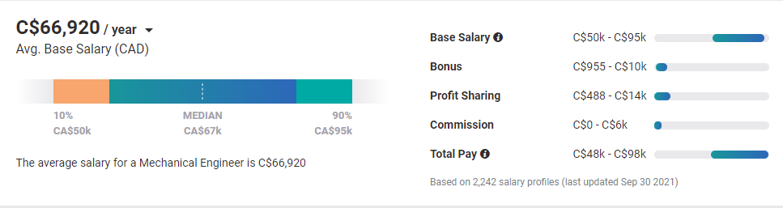

Mechanical Automation
Mechanical automation is when robots/machines do tasks without help(automatically).
This technology is being used to make take over mundane, and repetitive tasks. These machines have already started replacing factory workers and big construction chain jobs, such as building/putting together cars.
This technology is constantly advancing to be able to handle more complicated commands and bigger jobs.
This will help us greatly as, we will be able to do repetitive tasks faster, more accurately, and for less money (in the long run).
Mechanical Automation can also lead into other fields of technology such as:
Machine Learning
Artificial Intelligence
3D Printing
Nanotechnology
colleges/Universities
The Conestoga College holds an optional co-op class for mechanical engineering for robotics and automation, its length is 3 years and combines theoretical knowledge with applied skills in the controls of robotics.
Click me to go to the College class website!
Directions.
Future job opportunities
Here is a list of jobs Mechanical Automation/Engineering can get you.
Aerospace Engineer
Automotive Engineer
Biomedical Engineer
Construction Engineer
Manufacturing Engineer
Project Manager
What Salary you should expect to get in this field?
